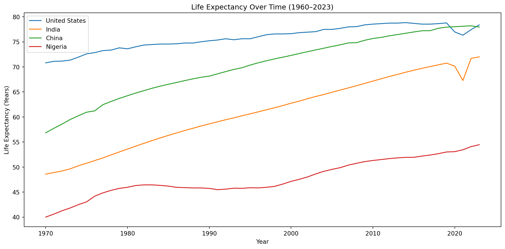
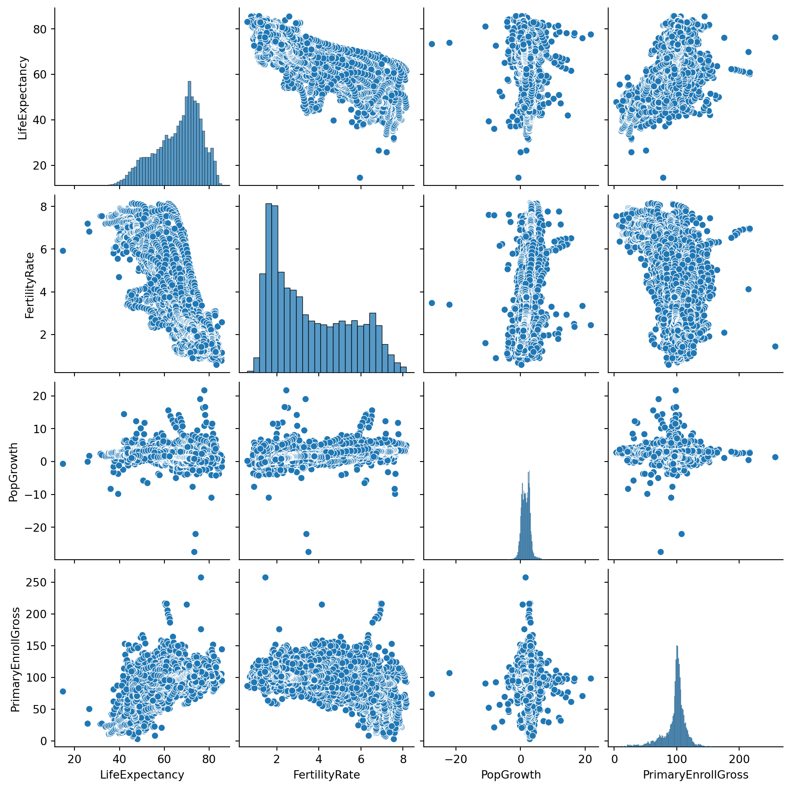
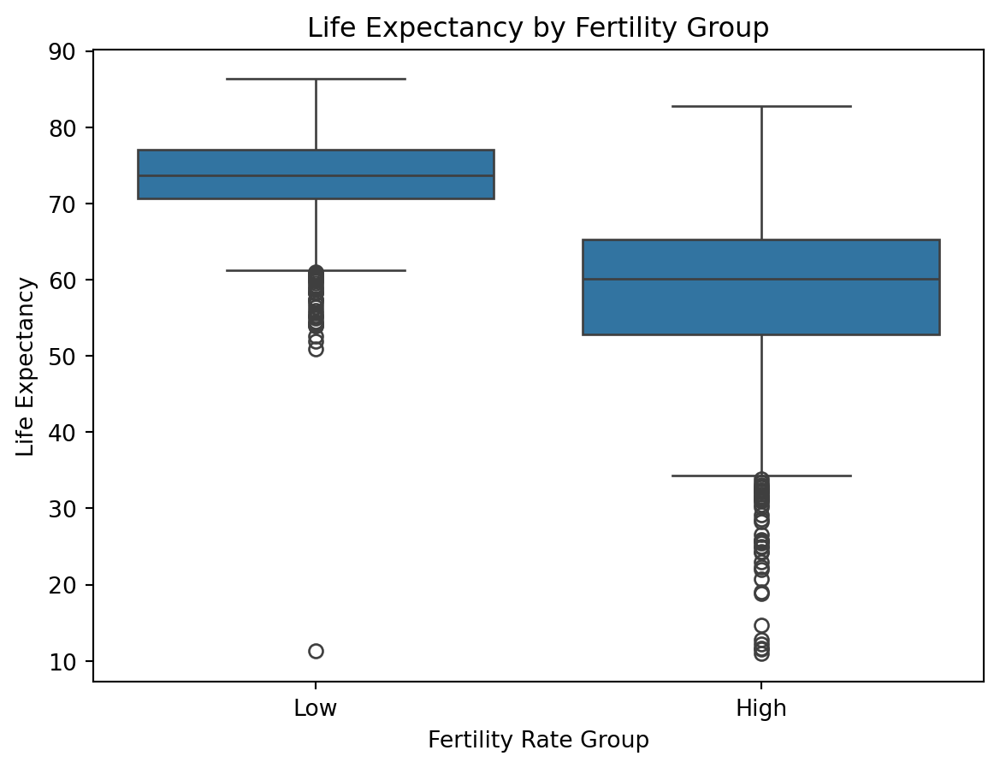

import pandas as pd
import seaborn as sns
import matplotlib.pyplot as plt
import statsmodels.formula.api as smf
# Load and clean data
df = pd.read_csv("datasets/wdi_data.csv")
df = df[df["Country Name"].notna()]
year_cols = [col for col in df.columns if "YR" in col]
df_long = df.melt(
id_vars=["Country Name", "Country Code", "Series Name", "Series Code"],
value_vars=year_cols,
var_name="Year", value_name="Value"
)
df_long["Year"] = df_long["Year"].str.extract(r"(\d{4})")
df_long = df_long[df_long["Year"].notna()]
df_long["Year"] = df_long["Year"].astype(int)
df_long = df_long[df_long["Value"].notna() & (df_long["Value"] != "..")]
df_wide = df_long.pivot(
index=["Country Name", "Country Code", "Year"],
columns="Series Name",
values="Value"
).reset_index()
df_wide = df_wide.rename(columns={
"Life expectancy at birth, total (years)": "LifeExpectancy",
"Fertility rate, total (births per woman)": "FertilityRate",
"Population growth (annual %)": "PopGrowth",
"School enrollment, primary (% gross)": "PrimaryEnrollGross"
})
for col in ["LifeExpectancy", "FertilityRate", "PopGrowth", "PrimaryEnrollGross"]:
df_wide[col] = pd.to_numeric(df_wide[col], errors="coerce")Long-Term Development Indicators and Global Trends
Introduction
Our final project explores the long-term trends and interrelationships between key development indicators across countries using data from the World Bank’s World Development Indicators (WDI) database. Specifically, we focus on life expectancy, fertility rate, population growth, and school enrollment. These indicators are foundational in understanding the social and demographic evolution of countries from 1960 to 2023.
By analyzing these indicators longitudinally, we aim to reveal how population health, demographic transition, and education investment interact over time, and how they can collectively inform national and global development strategies.
Background
Development indicators are critical tools for understanding how societies progress over time. Measures such as life expectancy and fertility rate reveal how access to healthcare, education, and economic opportunities impact the quality of life and long-term population dynamics. In contrast, metrics like school enrollment and population growth highlight the importance of human capital and demographic pressure in shaping a country’s future trajectory.
Longitudinal data allows us to move beyond snapshots and instead capture how these dynamics unfold over decades. For example, countries with declining fertility and increasing school enrollment often exhibit longer life expectancies, but this relationship may vary depending on region, income level, or development stage.
The World Development Indicators (WDI) database provides extensive historical data on these themes, making it an ideal resource for studying global development trends over time. Our project leverages this resource to analyze patterns from 1960 through 2023 across over 100 countries.
Research Questions
Our project addresses the following questions:
- How has life expectancy evolved globally since 1960, and how is it associated with fertility and education trends?
- What is the relationship between school enrollment and fertility rate across countries?
- Do countries with rapid population growth face distinct development challenges in terms of life expectancy?
- What insights can we derive from multivariable regression models that predict life expectancy using demographic and education indicators?
Objectives
The primary objectives of this project are to:
- Analyze long-term trends in life expectancy, fertility, population growth, and school enrollment using WDI data.
- Examine correlations among these indicators to understand global development patterns.
- Use regression models to investigate how these factors jointly predict life expectancy.
- Visualize global development trajectories using intuitive and informative charts.
Data and Methods
This project uses four key indicators from the WDI:
- Life Expectancy at Birth (years) —
SP.DYN.LE00.IN
- Fertility Rate (births per woman) —
SP.DYN.TFRT.IN
- Population Growth (annual %) —
SP.POP.GROW
- School Enrollment, Primary (% gross) —
SE.PRM.ENRR
Summary Statistics
df_wide[["LifeExpectancy", "FertilityRate", "PopGrowth", "PrimaryEnrollGross"]].describe()| Series Name | LifeExpectancy | FertilityRate | PopGrowth | PrimaryEnrollGross |
|---|---|---|---|---|
| count | 14290.000000 | 14290.000000 | 14287.000000 | 11022.000000 |
| mean | 66.333781 | 3.566771 | 1.659472 | 97.080280 |
| std | 10.332392 | 1.866508 | 1.677009 | 19.795185 |
| min | 10.989000 | 0.586000 | -27.470786 | 3.081780 |
| 25% | 60.032000 | 1.940151 | 0.643642 | 92.552750 |
| 50% | 68.642079 | 2.988000 | 1.597588 | 100.756630 |
| 75% | 73.810628 | 5.104000 | 2.568327 | 106.550449 |
| max | 86.372000 | 8.864000 | 21.700343 | 257.434204 |
These summary statistics help us understand the general range and variability of the four indicators across time and space. Life expectancy shows a wide range across countries, from below 50 years to over 80. Fertility rate and population growth also exhibit significant variance, reflecting different stages of demographic transition.
Visualization: Life Expectancy Over Time
plt.figure(figsize=(12, 6))
selected = ["United States", "India", "China", "Nigeria"]
for country in selected:
sns.lineplot(
data=df_wide[df_wide["Country Name"] == country],
x="Year", y="LifeExpectancy", label=country
)
plt.title("Life Expectancy Over Time (1960–2023)")
plt.ylabel("Life Expectancy (Years)")
plt.xlabel("Year")
plt.legend()
plt.tight_layout()
plt.show()
This chart clearly shows the upward trajectory of life expectancy across all selected countries, albeit with different starting points and rates of change.
Exploring Relationships Between Indicators
We now use a pairplot to explore the relationships among the four indicators:
sns.pairplot(
df_wide[["LifeExpectancy", "FertilityRate", "PopGrowth", "PrimaryEnrollGross"]].dropna()
)
This plot reveals a strong negative correlation between life expectancy and fertility, and a weak positive association between life expectancy and school enrollment.
Regression Analysis
We build a linear regression model to predict life expectancy using fertility, population growth, and school enrollment:
ols_model = smf.ols(
"LifeExpectancy ~ FertilityRate + PopGrowth + PrimaryEnrollGross",
data=df_wide
).fit()
ols_model.summary()| Dep. Variable: | LifeExpectancy | R-squared: | 0.801 |
| Model: | OLS | Adj. R-squared: | 0.801 |
| Method: | Least Squares | F-statistic: | 1.481e+04 |
| Date: | Mon, 21 Apr 2025 | Prob (F-statistic): | 0.00 |
| Time: | 23:41:07 | Log-Likelihood: | -32266. |
| No. Observations: | 11020 | AIC: | 6.454e+04 |
| Df Residuals: | 11016 | BIC: | 6.457e+04 |
| Df Model: | 3 | ||
| Covariance Type: | nonrobust |
| coef | std err | t | P>|t| | [0.025 | 0.975] | |
| Intercept | 77.3726 | 0.312 | 247.977 | 0.000 | 76.761 | 77.984 |
| FertilityRate | -4.9956 | 0.033 | -150.721 | 0.000 | -5.061 | -4.931 |
| PopGrowth | 1.0451 | 0.036 | 28.855 | 0.000 | 0.974 | 1.116 |
| PrimaryEnrollGross | 0.0525 | 0.003 | 20.565 | 0.000 | 0.047 | 0.058 |
| Omnibus: | 721.339 | Durbin-Watson: | 0.132 |
| Prob(Omnibus): | 0.000 | Jarque-Bera (JB): | 3504.437 |
| Skew: | -0.023 | Prob(JB): | 0.00 |
| Kurtosis: | 5.762 | Cond. No. | 720. |
Notes:
[1] Standard Errors assume that the covariance matrix of the errors is correctly specified.
Interpretation Fertility Rate shows a strong negative association with life expectancy, suggesting that lower fertility correlates with longer lives.
School Enrollment has a modest positive effect on life expectancy, highlighting the role of education in improving population health.
Population Growth shows mixed or negligible influence, depending on regional factors.
Additional Insights: Country Group Analysis
We can group countries by income level or region (if data permits) to further refine our analysis. For now, we use a simple example of comparing high vs low fertility countries:
df_wide["FertilityGroup"] = pd.qcut(
df_wide["FertilityRate"],
q=2,
labels=["Low", "High"]
)
sns.boxplot(data=df_wide, x="FertilityGroup", y="LifeExpectancy")
plt.title("Life Expectancy by Fertility Group")
plt.xlabel("Fertility Rate Group")
plt.ylabel("Life Expectancy")
plt.show()
The boxplot clearly shows that countries with lower fertility tend to have higher life expectancy.
Conclusion
Our analysis shows that demographic and education indicators are deeply intertwined with population health. Life expectancy has improved dramatically worldwide since 1960, particularly in countries with declining fertility and improved school enrollment.
Multivariable regression confirms the strong influence of fertility rate on life expectancy, with additional positive effects from educational access. While population growth plays a less clear role, it may be relevant when considered in combination with economic or geographic context.
This project reinforces the importance of investing in education and healthcare to foster long-term development and improve quality of life globally.